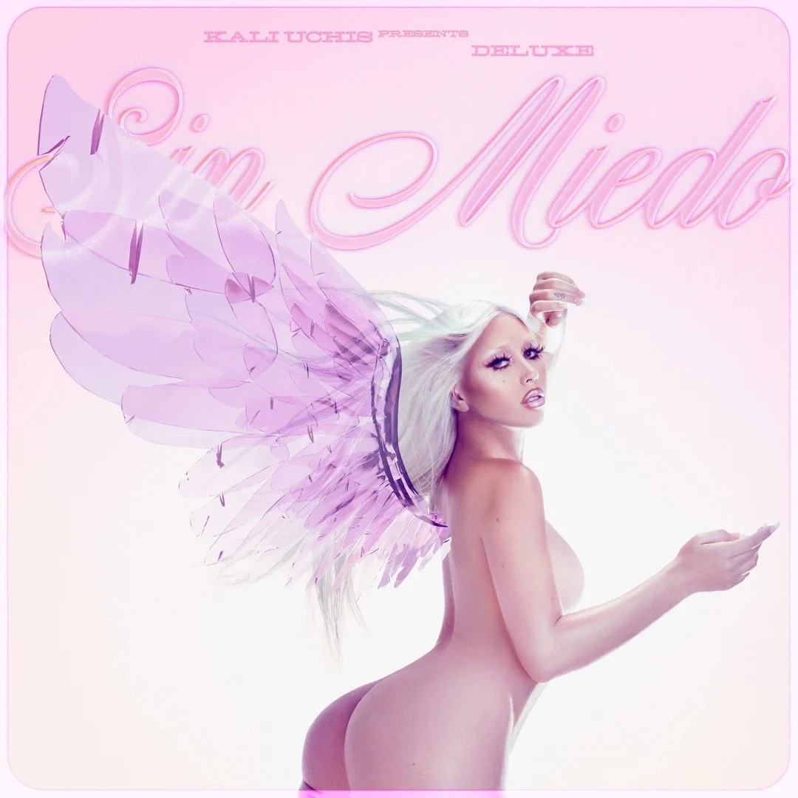

Karly Marina Loaiza (Alexandria, Virginia; 17 de julio de 1994), conocida profesionalmente como Kali Uchis, e s una cantautora, productora, actriz, directora, diseñadora y empresaria estadounidense-colombiana, que saltó a la fama internacional en 2021 con el gran éxito de su canción «Telepatía», perteneciente al segundo álbum de estudio de la cantante titulado Sin Miedo (Del Amor y Otros Demonios), publicado el 18 de noviembre de 2020.
Sus álbumes y EP's publicados hasta la fecha (en orden cronológico) son:
Además de tener 3 nominaciones importantes en los premios Grammy: